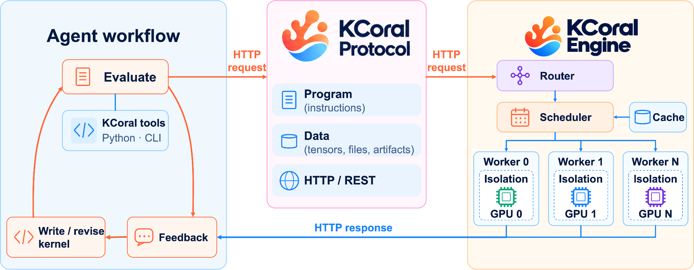
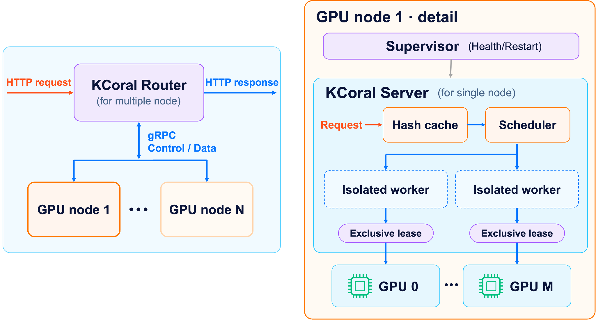
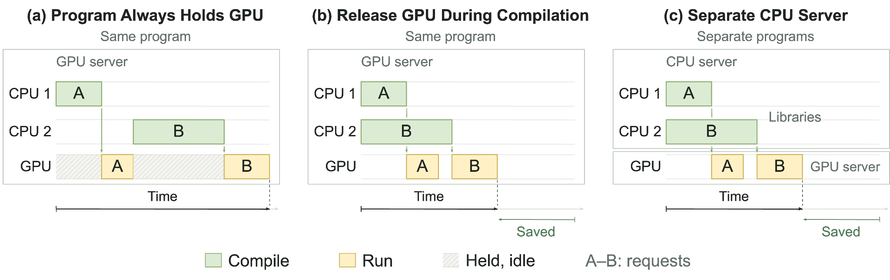
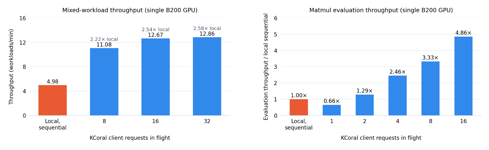

机器学习系统随着AI的快速发展越来越重要，GPU内核是这些系统的核心。AI agent能自动开发GPU内核：反复生成代码、运行、检查正确性与性能、再改进。CAKE、Kernel Design Agents（KDA）等近期工作展示了agent在GPU内核开发上日益增长的能力。
内核agent负载快速增长带来新挑战：高效管理与共享GPU资源。Agent只在循环的评估阶段需要GPU，给每个agent独占一块GPU会浪费算力；共享GPU提升利用率，但需要协调以避免评估间相互干扰。KCoral是一个轻量benchmark server，把GPU执行从agent循环里解耦出来：agent在自己的workspace里写代码，把评估请求发给KCoral，server调度GPU、执行、返回结果。
为应对这一挑战，设计了KCoral，一个轻量benchmark server，把GPU执行从agent循环里解耦出来。Agent在自己的workspace里生成、修改代码，把评估请求发给KCoral；server调度GPU访问、执行请求、返回结果进入下一轮迭代。标准化协议支持多样的内核负载，agent本地不需要GPU。KCoral提供：
● 共享GPU访问：多个agent共享一个小GPU池。
● 无缝扩展：统一入口支持单GPU、多GPU、多节点执行。
● 可靠高效的评估：请求级隔离限制干扰，性能接近本地评估。
● 边缘开发：agent可用远程边缘设备的GPU，如NVIDIA Jetson Thor。
KCoral为agentic内核开发与GPU agent后训练提供共享底座，让agent规模化改进机器学习系统。

本地agentic内核开发循环里，agent生成内核、本地评估、再修改。这把agent绑死在GPU上：GPU难共享，GPU在远端时根本玩不转。
KCoral协议为远程内核开发而设计：本地client按协议发请求给拥有GPU的server，server返回结果。协议清晰描述内核、评估或调试负载，在不同设备与GPU间提供统一接口。
协议被设计成跑在HTTP上的原子program：包含一串上传代码/数据、运行代码、返回结果的操作序列。server返回指定的结果或执行错误，并附日志。协议有四个基本操作：
例如，下面的program上传一个Python模块和一个张量，在server的GPU上运行add_one并返回结果：
import numpy as np
from kcoral import Client, Program
SOURCE = """
def add_one(x):
return x + 1
"""
program = Program()
module = program.upload(kind="module", source=SOURCE)
add_one = program.get_function(module=module, name="add_one")
x = program.upload(kind="tensor", value=np.arange(4, dtype=np.float32))
y = program.run(fn=add_one, args=[x])
program.return_(key="output", value=y)
with Client("http://localhost:8000") as client:
result = client.execute(program)
print(result.results["output"]) # [1. 2. 3. 4.]有了这个协议，远程开发变得简单：在NVIDIA Thor上起server，在MacBook上开发内核。
欢迎社区采用该协议，在其上构建工具与server。
| 操作 | 说明 |
|---|---|
| upload | 上传源代码、张量、字节、编译产物或文件。 |
| get_function | 从已上传的模块或库中选取命名函数/对象。 |
| run | 带参数调用函数，绑定返回值。 |
| return | 从响应中选取此前的值、文件或目录。 |
KCoral engine实现该协议：管理机器上的GPU，把每个请求调度到最空闲的GPU。调度后，program独占GPU。这让多个agent共用同一GPU评估内核，干扰极小。

为支持多GPU节点，进一步设计了Rust写的KCoral router：统一入口，按节点健康与负载分派请求；管理server生命周期，崩溃时重启。即便大量agent请求并发，KCoral也能轻松分发到所管理的众多GPU节点。
为防止agent窥探其他无关agent的信息，或篡改系统文件做reward hacking，KCoral有隔离机制：每个请求只能访问固定的系统目录集合与自己的工作目录。为最小化开销，KCoral用bubblewrap：毫秒级启动开销，避开传统Docker隔离的秒级开销。
评估同一内核的多种实现时，各评估请求的脚本、张量等依赖通常完全相同，只有内核不同；每次全量重传是浪费。为此实现缓存机制：同哈希文件再次上传时自动跳过重复上传。
KCoral engine同时支持单GPU与多GPU内核：提交多GPU内核只需指定所需GPU数，调度器自动等待并分配足够GPU。
KCoral能把CPU编译与GPU执行分开。
内核评估并不全程需要GPU：编译步骤可能很慢，但完全不需要GPU。如果一个请求全程占着GPU，中间GPU空转就是浪费。KCoral提供两种机制避免编译占用GPU资源：同一program内释放GPU，或起两个program：一个编译、一个执行。

给get_function提供cpu_only标志，标记program里不需要GPU的部分，运行时释放GPU；GPU可转给其他需要的program：
program = Program()
ops = program.upload(kind="module", source=OPERATIONS)
# Compilation runs without the GPU; the GPU is free for other programs.
compile_kernel = program.get_function(module=ops, name="compile_kernel", cpu_only=True)
library = program.run(fn=compile_kernel, args=[KERNEL_SOURCE, {"arch": "sm_100a"}])
# Loading and benchmarking reacquire the GPU.
load_kernel = program.get_function(module=ops, name="load_kernel")
benchmark = program.get_function(module=ops, name="benchmark")
kernel = program.run(fn=load_kernel, args=[library])
timing = program.run(fn=benchmark, args=[kernel])
program.return_(key="timing", value=timing)大规模agent或后训练实验里，CPU编译与GPU执行的不均衡更严重。更好的办法是拆成专用的CPU与GPU服务：KCoral支持远程编译：CPU-only server编译内核并返回编译产物，再发往GPU server执行与benchmark。agent、编译、GPU执行三个集群独立扩展，按不同负载调资源配比。
# On the CPU host
kcoral server --device cpu --num-workers 8 --host 0.0.0.0 --port 8000
# On the GPU host
kcoral server --device gpu --gpus 0 --host 0.0.0.0 --port 8001with Client(CPU_URL) as cpu_client, Client(GPU_URL) as gpu_client:
arch = gpu_client.target()["arch"]
# Request 1: compile on the CPU server and return the shared library.
compiled = cpu_client.execute(compile_program(arch))
# Request 2: upload the library to the GPU server, check, and benchmark.
result = gpu_client.execute(benchmark_program(compiled.results["library"]))
print(result.results["check"], result.results["timing"])值得注意的是，KCoral上的内核评估可能比简单本地评估更快：编译能与其他内核评估任务的执行重叠并行。
为简化KCoral的使用，设计了KCoral命令行（CLI），在KCoral server上运行常用内核开发命令行工具，体验与本地工具一致。CLI目前封装python、compute-sanitizer、ncu、run-iket、shell：开发者或agent不用改变调用方式，就能在远端GPU上跑正确性检查、查内存错误、收Nsight Compute报告。例如：
# Point every kcoral command at the GPU server.
export KCORAL_URL='http://gpu.example.com:8000'
# Upload the experiment/ directory and run check.py with the worker's Python.
kcoral run python --send experiment -- experiment/check.py
# Run the same script under compute-sanitizer to catch CUDA memory errors.
kcoral run compute-sanitizer --send experiment -- python experiment/check.py
# Profile capture.py with Nsight Compute and download the report to artifacts/ncu.
kcoral run ncu --send experiment --out artifacts/ncu -- --set basic -- python experiment/capture.py
# Run an arbitrary shell script in the remote working directory.
kcoral run shell --send experiment -- bash experiment/setup.sh每条命令形如kcoral run TOOL [KCoral options] -- [native arguments]：--之前的选项选server与要发送的文件，之后的内容原样透传给worker上的工具。--send把脚本或整个目录上传到全新的远端工作目录，--fetch配--out下载产出文件，如profiler报告。
从三个维度评估KCoral：内核计时的保真度、多agent共享GPU时的吞吐、候选程序失败时的鲁棒性。所有评估用单张NVIDIA B200。
内核优化agent需要可靠的计时来指导优化。在TIRx-kernels的82个内核家族、500个负载配置上，对比KCoral与同GPU、同输入、同计时设置的本地直接计时（含L2缓存刷新），报告100×|remote−local|/local。测量只含内核执行，不含编译、输入准备、请求延迟。
偏差超5%的三个负载全是短RMSNorm或LayerNorm内核，本地耗时1.9-2.2μs，绝对差仅0.13-0.38μs。例如一个RMSNorm负载本地2.079μs、经KCoral 2.272μs：0.193μs的差值算出9.28%。在这个量级，亚微秒差就能造出很大的百分比。总体上KCoral与本地计时高度吻合，保留了优化所需的性能反馈。
跑256个负载：8个固定的TIRx-kernel特化（含Kimi Delta Attention、Alpha-MoE、MiniMax Sparse Attention），各重复32次。每个负载从冷缓存编译、构造GPU输入、benchmark已有内核；不含agent生成时间。本地基线不用KCoral串行跑同样负载。KCoral worker数与请求并发数对等变化。并发32时，最多32个请求在飞，一个完成就提交下一个。请求轮流用GPU，标cpu_only=True的CPU准备与编译可与另一请求的GPU工作并发。

并发32时，KCoral达到12.86 workloads/min，本地4.98，加速2.58倍。需独占GPU的操作总计1190.79秒，本地批量耗时3083.61秒，实际加速上限2.59倍；KCoral达到该上限的99.7%，不削减独占GPU工作量已几乎没有优化空间。
另一个更短的负载：编译一个4096×4096 cuBLAS matmul的C++ wrapper、构造输入、检查正确性、benchmark。16个常驻worker、16并发请求下，KCoral吞吐是本地串行执行的4.86倍（6批×96次重复测得）。
两项评估都不含agent生成时间。为建模完整工作流，每个评估前加162秒生成延迟（取自TIRx Harness的Kimi Delta Attention forward trace中位数近似值）。32个模拟agent配16个KCoral worker，每agent提交2次评估：64次评估6.54分钟跑完，朴素串行agent基线估计180.82分钟，工作流加速27.63倍。该增益含并行生成与重叠评估。KCoral还能把独立请求分到多GPU，吞吐随GPU与CPU容量扩展。
收集200个CUDA、Triton、CuTeDSL内核候选，覆盖matmul、attention、normalization等算子，含PTXBench评估轨迹里的候选。套件含编译与架构拒绝、数值不一致、运行时错误、worker退出。KCoral返回对应的编译器、运行时或正确性检查诊断，200个用例全部符合预期。每个用例后提交一个已知良好的GPU负载：200个后续请求在同一server实例上全部成功：agent修改重提失败候选，无需重启server。
从pip安装KCoral（更多安装方式见安装指南https://kcoral.mlc.ai/docs/latest/getting-started/installation.html）：
pip install kcoral在有GPU的设备上启动KCoral server，可自定义host与端口。注意：KCoral允许client在worker上执行任意代码，只让可信client访问server或Router；部署在可信的隔离网络，绝不把这些端点暴露到公网；worker跑在沙箱里，限制权限与主机资源访问。
kcoral --gpus 0 --host 0.0.0.0 --port 8000用KCoral client写program，发到选定的地址；client不需要GPU或CUDA工具链。
接agent时，可以这样给它布置任务：
Read .agents/skills/kcoral-client/SKILL.md.
Use the KCoral service at http://localhost:8000
to implement Triton addition for two float32 vectors of length 4096.
First check correctness against PyTorch, then measure performance after it passes.
Save a client program that can be rerun, and report the check results and execution time.agent仍在原workspace改代码，需要执行时把program发给KCoral server，根据返回的错误或性能结果继续修改。
完整指南：官网https://kcoral.mlc.ai/ 、GitHub https://github.com/mlc-ai/kcoral 、快速上手https://kcoral.mlc.ai/docs/latest/getting-started/quickstart.html 、内核benchmark教程https://kcoral.mlc.ai/docs/latest/tutorials/benchmark-kernel.html 。
KCoral为集成agent kernel harness与kernel agent强化学习（RL）环境而建。
TIRx-harness是kernel agent编译器与harness，以KCoral为默认内核评估后端，支撑其大规模内核演化实验。
Kernel Design Agents（KDA）也将集成KCoral，在多agent间实现远程编译与GPU共享。
参考：https://blog.mlc.ai/2026/10/05/kcoral-lightweight-benchmark-server-for-agentic-gpu-programming